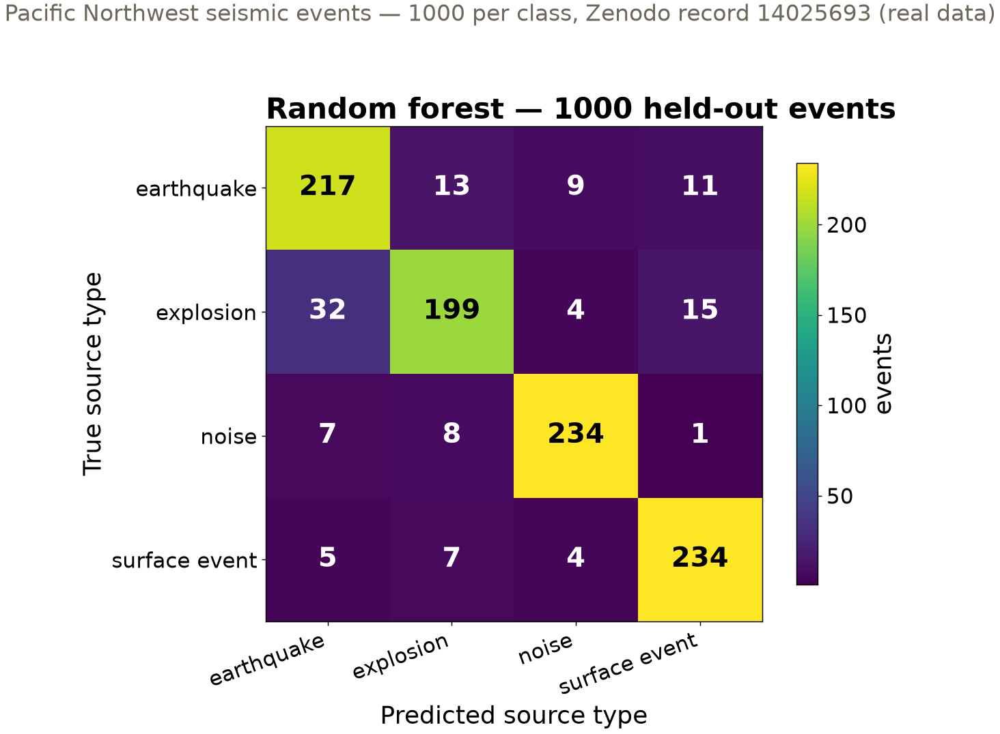
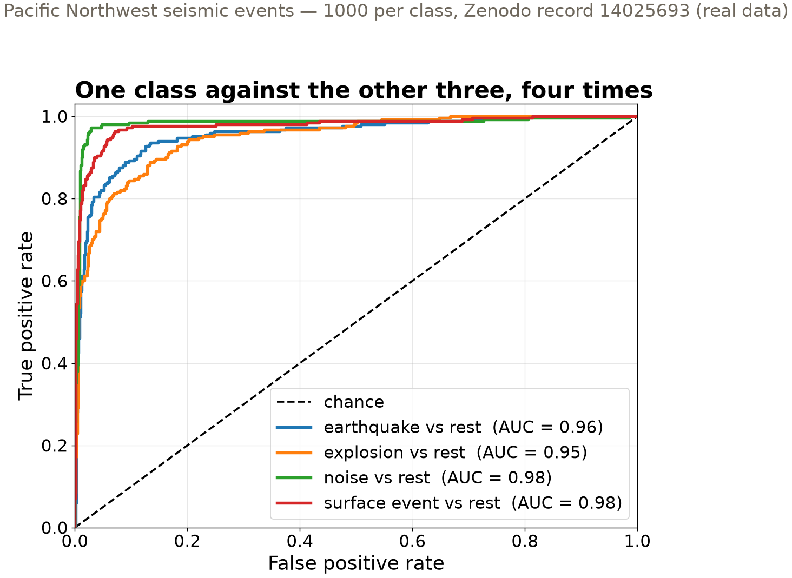

Session 15 · Mon Nov 2 · Book section 3.5
🏆
A leaderboard turns your classifier into one number.
What has to be true of the design for that number to mean anything?
Reading: 3.5 Multiclass classification
📖 Where today’s data comes from: the curated Pacific Northwest catalog behind our four classes.
Ni, Y., Hutko, A., Skene, F., Denolle, M., Malone, S., Bodin, P., Hartog, R., & Wright, A. (2023). Curated Pacific Northwest AI-ready seismic dataset. Seismica, 2(1).
✓ Doing it right: earthquake-vs-blast classifiers deployed beside human analysts, scored per class.
Linville, L., Pankow, K., & Draelos, T. (2019). Deep learning models augment analyst decisions for event discrimination. Geophysical Research Letters, 46, 3643–3651.
✗ Leakage in the wild: a taxonomy of competitions and studies whose winning scores measured the leak, not the skill.
Kaufman, S., Rosset, S., Perlich, C., & Stitelman, O. (2012). Leakage in data mining: formulation, detection, and avoidance. ACM Transactions on Knowledge Discovery from Data, 6(4), Article 15.
📖 Why leaderboards need a hidden test set: repeated submissions overfit the public score — and how to limit it.
Blum, A. & Hardt, M. (2015). The Ladder: a reliable leaderboard for machine learning competitions. Proceedings of the 32nd International Conference on Machine Learning, PMLR 37.
The field is actively writing this story — new papers land monthly. These four anchor today’s ideas.
4 × 1000 earthquake · explosion · surface event · noise
61 physical waveform features per event
Real Pacific Northwest events, curated and archived on Zenodo (record 14025693). Balanced by curation — real catalogs are not.
The seismometer records all four. The network needs to know which one it just felt.

32 explosions called earthquakes — the biggest cell off the diagonal. Quarry blasts and shallow earthquakes shake alike at regional distances.

ROC is a two-class tool. For four classes: binarize — each class versus the other three. Explosions are the hardest to separate.
0.88 random forest, macro-F1, held-out events
Per class: F1 = harmonic mean of precision and recall. Macro = average the four F1 scores with equal weight — the rarest class counts as much as the commonest.
Accuracy lets a model coast on easy, common classes. Macro-F1 makes every source type count equally.
Any model, any features. Model choices are made by cross-validation inside the training set — never by peeking at the held-out events.
Naming what your evaluation cannot test is part of the evaluation. Monday (3.8): the full ladder of designs this dataset cannot run.
| Tool | The question it answers | Today’s answer |
|---|---|---|
| Confusion matrix | which sources get mistaken for which | explosions → earthquakes, 32 of 250 |
| One-vs-rest ROC | is each class separable at any threshold | AUC 0.95–0.98; explosions lowest |
| Macro-F1 | skill with every class weighted equally | 0.88 vs a 0.25 floor |
| Hidden test set | did you tune to the public score | public = diagnostic, hidden = grade |
Per-class evaluation plus an evaluation design you can defend — that pair is the deliverable, today and in your project.
pixi run jupyter lab → 3.5_multiclass_classification.ipynbtrain_test_split, random_state=2026, stratify=y) — then the three classifiersX_train onlyresults/predictions_<uwnetid>.csv and open your leaderboard pull requestLeaderboard closes Tue Nov 24 · Wed: logistic regression + calibration (3.6), HW-CML assigned · Mon: robust training (3.8)
ESS 469/569 · Machine Learning in the Geosciences · Autumn 2026